Николай Иронов
Нейросеть Студии Артемия Лебедева, которая генерирует логотипы для пользователей.
Перенесла реальные логотипы пользователей на мерч, униформу и упаковку — результат считывается как готовый бренд и становится аргументом попробовать сервис.
Блог Иронова
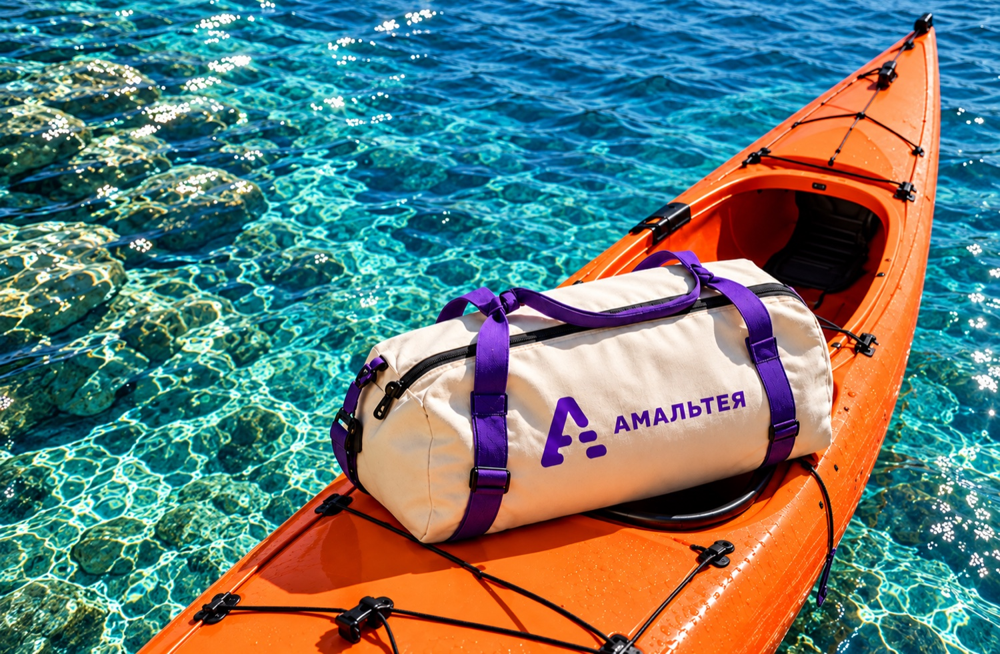
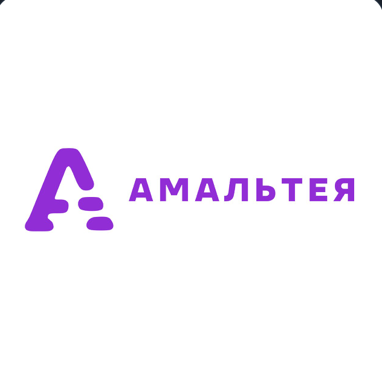
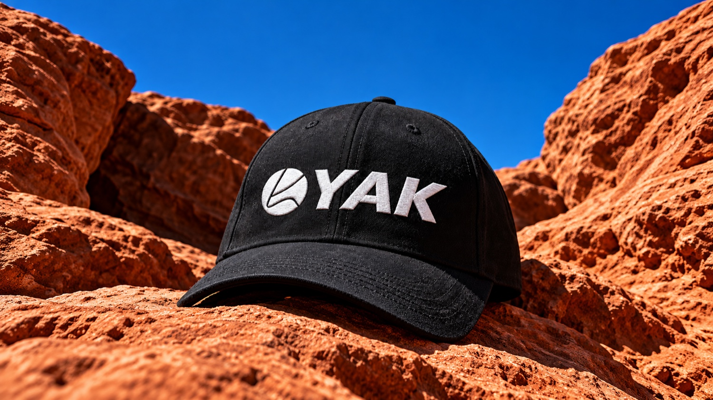
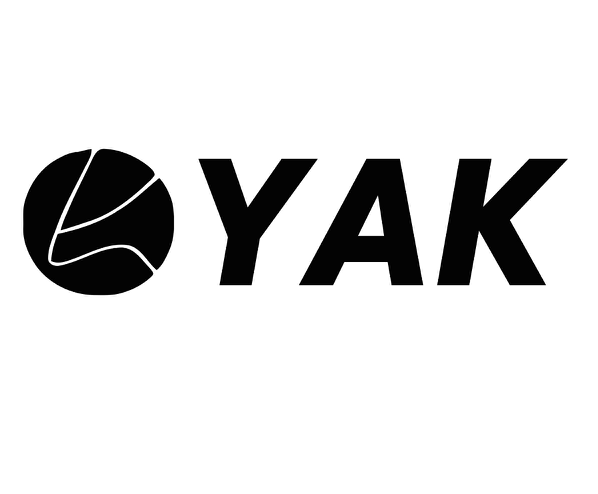
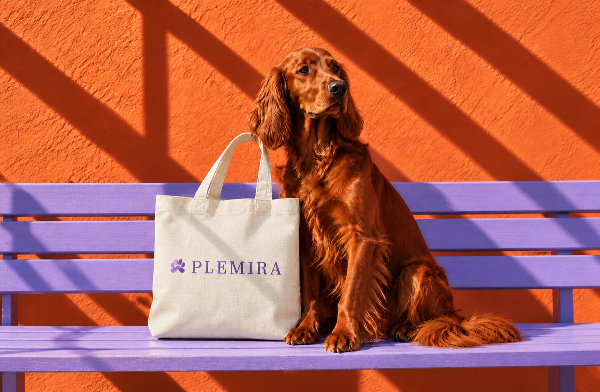
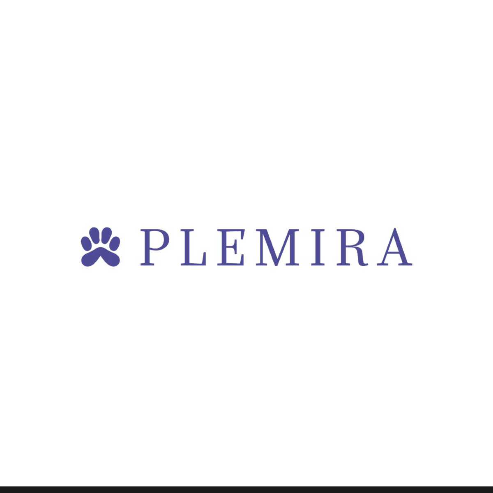
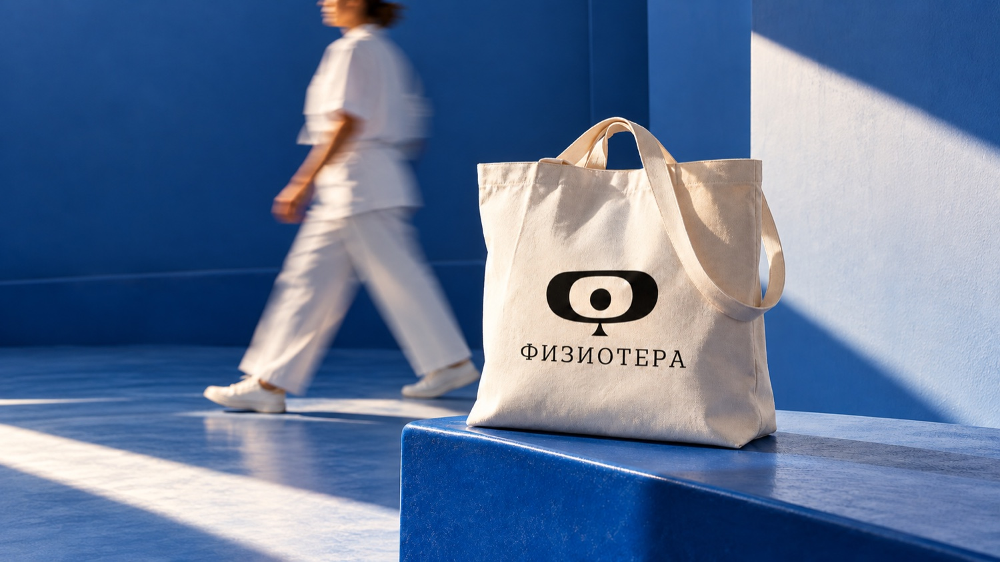
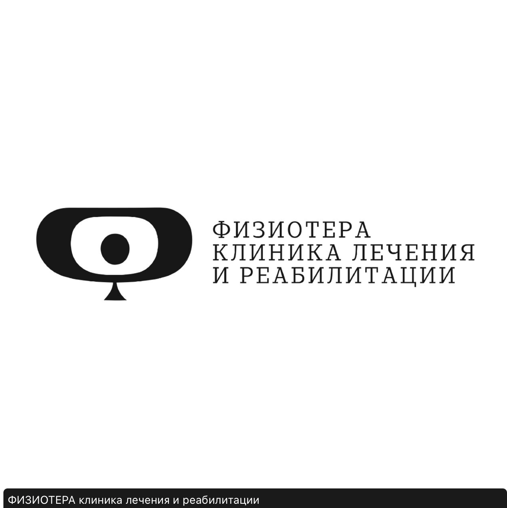
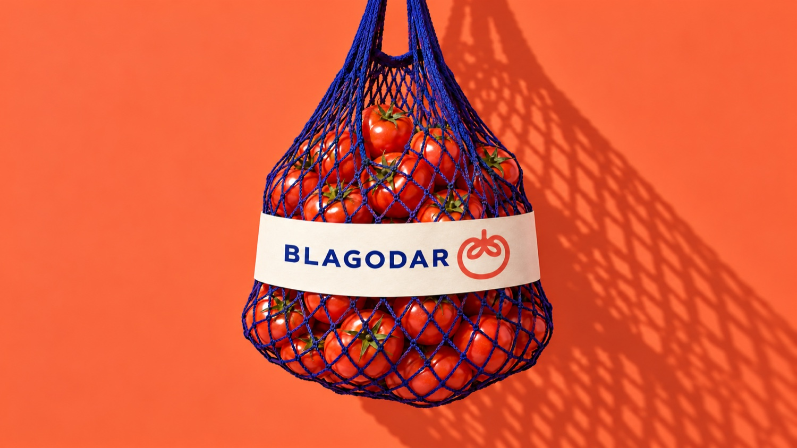
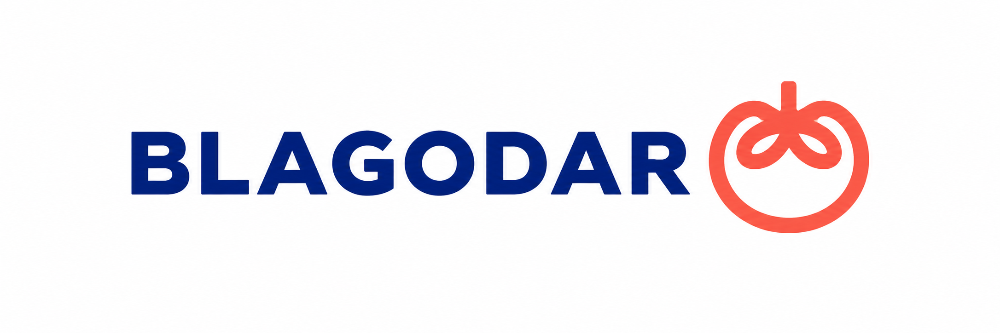
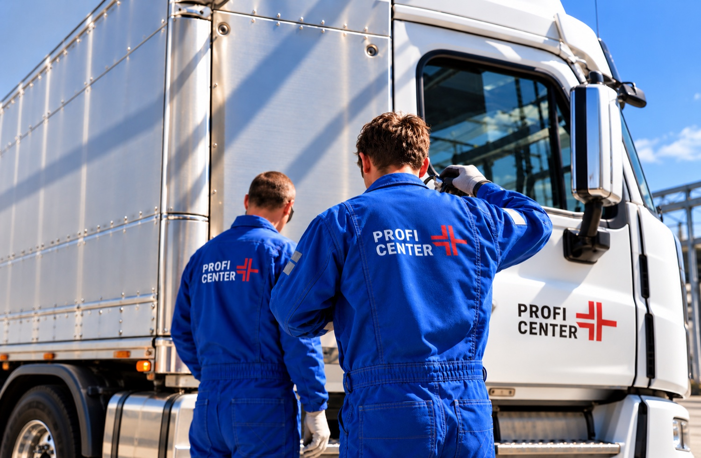
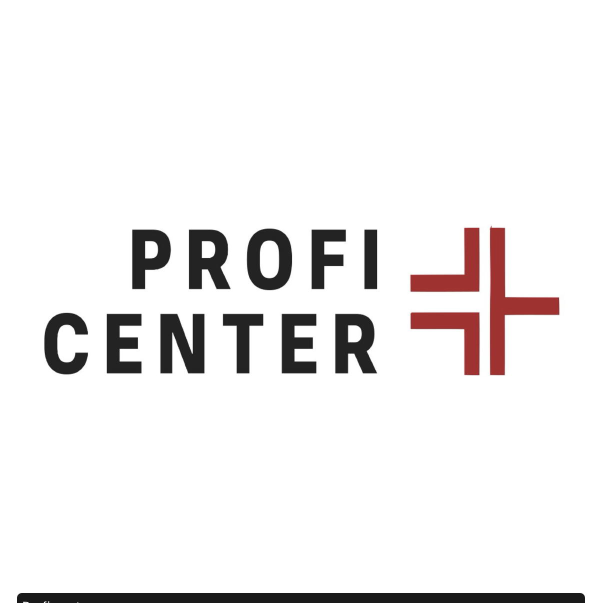
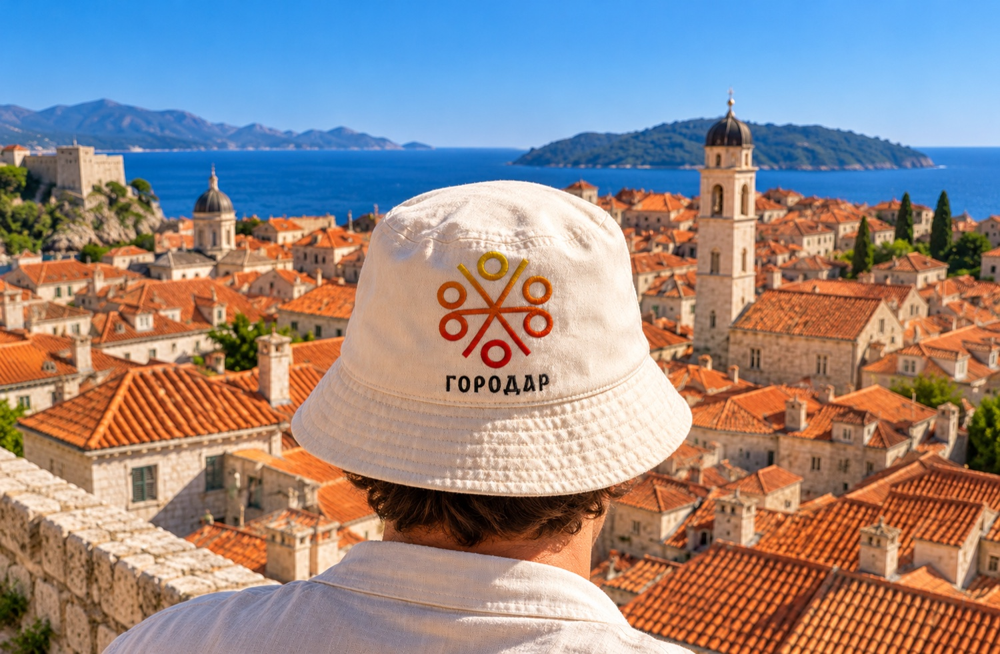
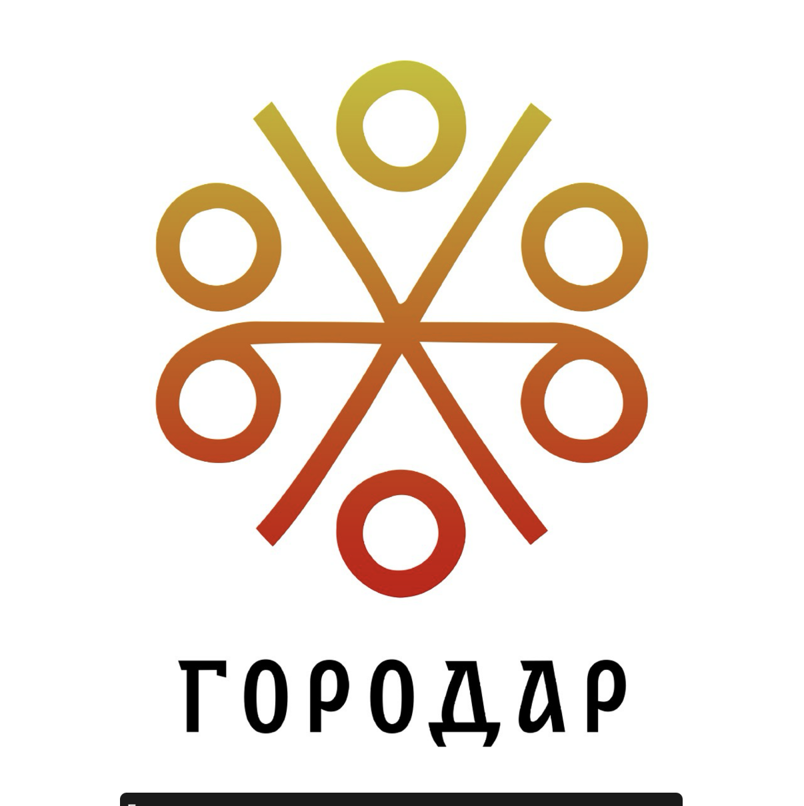
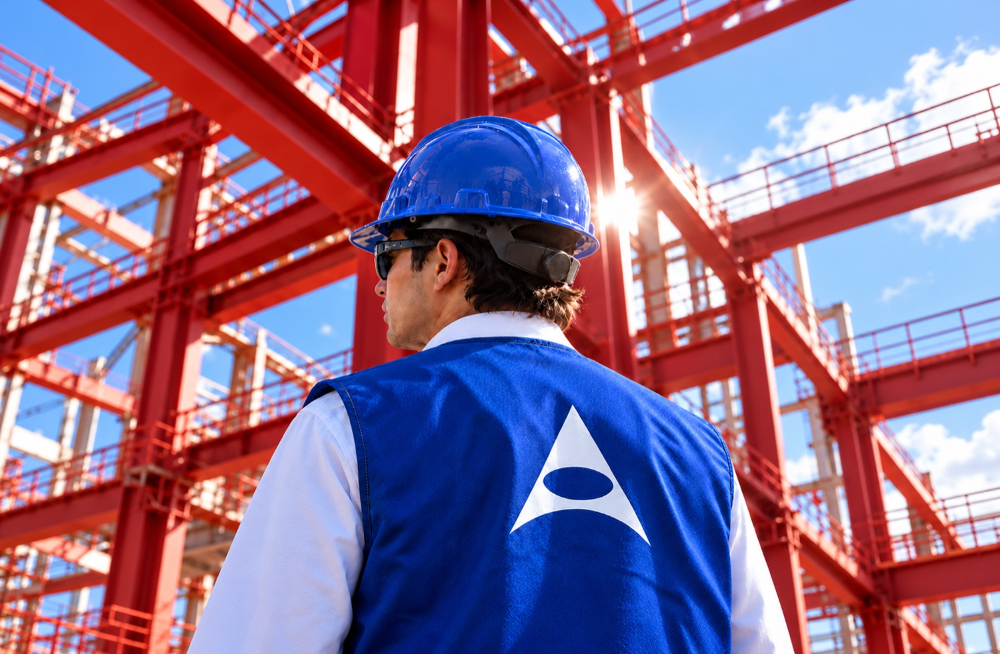
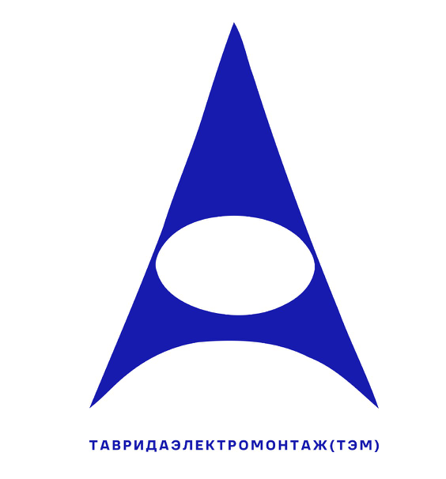